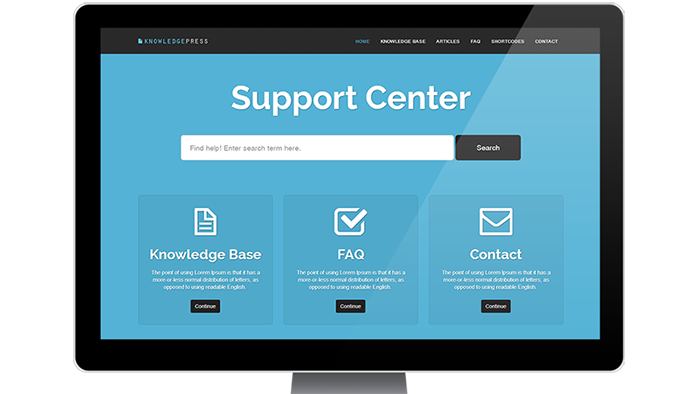
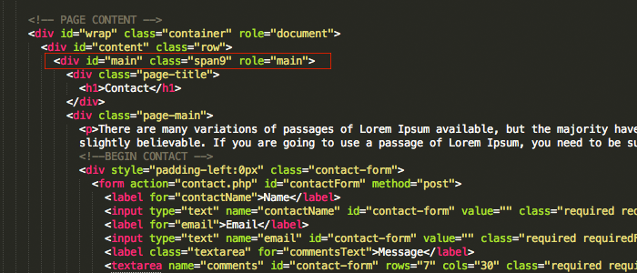
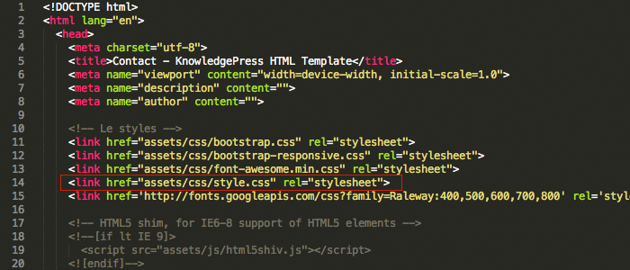
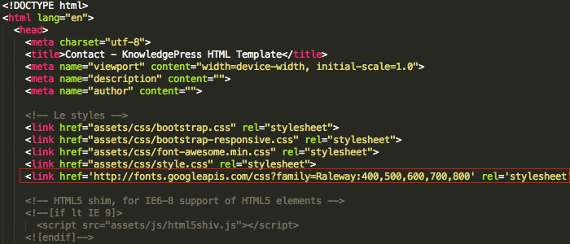

KnowledgePress HTML Template
This template is designed for knowledge base / wiki website featuring live search.
Html Files Structure
This template is a responsive layout . the content is wrapped into a container with a class of : Main .
Structure of Css Styles
The main stylesheets are located in the assets/css/styles.css file, where global styles are defined.
Fonts and Typography
KnowledgePress uses Google Web Font: Raleway Google Fonts
if you would like to change font, change the link located within the header in page files and open / styles.css to change the headings .
jQuery Autocomplete
The template uses jQuery Autocomplete script, details how to modify can be found on the script Github page: jQuery Autocomplete . Demo serach data is located in the content/countries.txt file.
Features
The template uses Twitter Bootstrap features, details how to implement and modify can be found on the Github page: Twitter Bootstrap .
Responsive Videos
The template uses FitVids script for responsive videos, details how to use can be found on the script page: Fit Vids .
Contact Form and PHP files
If you would like to change the Recipient Email, open contact.php go to line 4 and edit test@test.com